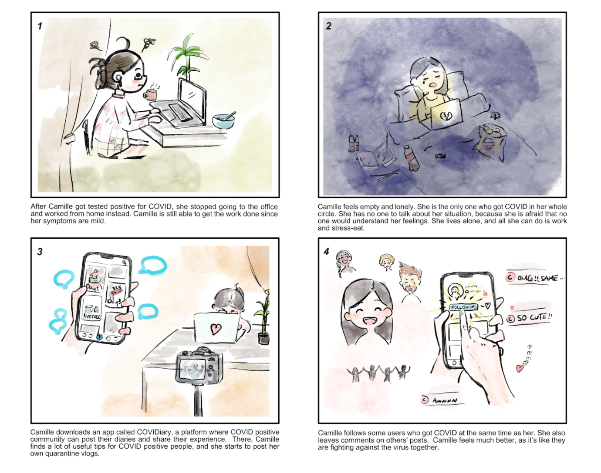
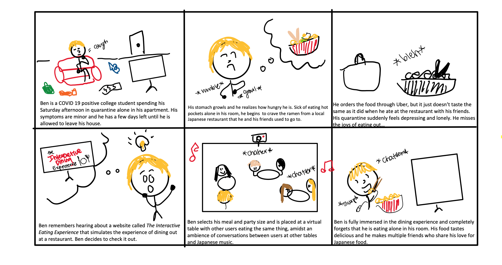

We deployed our questionnaire by posting a link on the 100,000+ member subreddit called
/r/Covid-19Positive, a popular platform for COVID-19 positive patients to speak
about their experiences and offer support for each other. We received approximately 30 responses
before closing the survey and moving on to our next stage of research, in-depth interviews. Our insights from the questionnaire were vital in crafting follow-up questions for our interviews.
According to our survey responses, a significant portion of our participants (over 41%) felt that
they had either a negative or strongly negative experience in quarantine. This was important
because it revealed to us that there indeed existed a need to improve the overall quarantine
experience of COVID-19 positive members.
Additionally, we were able to conclude that the COVID-19
positive community demonstrated significant areas of improvement in terms of their social
wellness, with over 69% of survey responders expressing feelings of isolation from others,
as well as over 67% expressing a longing to see their friends and family. Eating out
with friends was the highest ranked social activity that members missed the most. We used
these findings to develop open ended interview questions that would further assess the
strength of the COVID-19 positive community and their specific social needs.
We were able to find 6 willing participants to participate in our interviews, which were conducted via zoom. Based on their responses, we discovered that a majority of our interviewees were unaware of other members of the COVID-19 positive community and were thus unable to share their experiences with each other. They also expressed feelings of being socially neglected by their friends, and often felt frustrated due to excessive boredom and loneliness. We moved on to creating user personas which illustrated our archetype stakeholders based on these insights.
User Personas & Storyboarding
Our primary persona represented a 22 year old, recent university graduate named Julie, a demographic representative of the majority of our responses from our questionnaire.
Our secondary persona was represented by a young mom named Lindsay whose high school son has contracted COVID.
Our team then drafted several storyboard scenarios to propose possible design solutions.
"COVIDiary"

"The Interactive Eating Experience"

Competitive Analysis
At this point in our research, we were beginning to hone in on
what the most important features of our design solution should be. We wanted to
create an application that would increase accessibility to other COVID-19
positive patients, offer an opportunity for members to form meaningful
relationships and share their unique experiences with each other, and to curb
boredom through real-time, continual social contact with others. After meeting
with the rest of the team and discussing how we would be able to address
these specific issues, we were able to finalize a description of our design
solution:
"Our web application is an
exclusive mobile and web social platform for the COVID-19 positive
community that allows them to share their experiences and meet other
members of the community in a fun and unique way. Features include
posting and reacting to public diary entries, messaging and video
chat functionalities, arcade rooms where you can play games like
Connect 4 or Draw Something with other users, and a virtual dining
room where you can meet new friends and eat together."
Our next step was to identify a
few competitor solutions to compare against our team’s web information system.
We developed a set of specific, consistent and accessible criteria for comparison and analyzed
a variety of different COVID-19 positive community platforms such as the COVID-19 Discord Server and the Survivor Corps Facebook Group:
Ranking System/Criteria
Competitive Analysis Matrix
Competitive Analysis Matrix (cont)
After a thorough analysis of our competitors, we were able to articulate our unique competitive advantage:
Our app is designed especially for the COVID-19 positive community to enhance its members’ social well-being in a unique and creative way. Unlike our competitors, our app is extremely accessible because making an account is completely free and users are not required to log in through an account on a third party platform. Our base features include all the usual social media platform functionalities like post creation, direct messages, and user engagement through comments, likes, and fun emoji reactions.
Our application also facilitates the formation of meaningful relationships between users through a tag feature on a user’s public profile page that displays the user’s top interest(s). Users can utilize these tags to find other users who share similar interests with them and start a conversation.
To encourage users to engage with other users’ content and stay active in the community, we implemented a ranking system which rewards users who are most active to receive special perks such as enhanced profile customization and the opportunity to become a moderator.
To foster a safe environment for users to share personal experiences, active moderation is in place and a strict code of conduct is enforced for all content creation. This gives our application an edge when it comes to building a community that feels comfortable and secure to talk about their experiences.
Arcade rooms where you can play games with other users and a virtual dining room where you can find other users to eat with are the unique features that set our application apart from other social media platforms and offer alternative outlets to relieve boredom and stress.
Through our app, we hope to offer the community a platform to share their experiences, reach out to others, seek advice, and maximally maintain social interactions just as they were able to before their diagnosis. We are eager to create a safe and caring environment for the COVID-positive community and to enrich their quarantine experience."
Sketches and Wireframes
Moving forward with the prototyping process, we listed the key functions/tasks that our interactive system needed to support, such as a public feed, a friends list, a direct messaging feature, public profiles, and post creation. We then divided the work and sketched out wireframes for the main pages of the user interface and the interaction steps via Sketch by Invision, a collaborative design tool.
Wireframes
designed collaboratively through SketchLo-Fi Prototyping
As we continued to build on our sketches and wireframes, we moved to Figma to
begin building our low-fidelity prototype, which would allow us to test out
the key functions of our application and demonstrate a rough version of the
user experience. We tested our prototypes with other teams through Zoom after
drafting a Usability Plan that outlined a list of tasks for our users to
complete and a list of interview questions to capture their thoughts on their
experience with the prototype.
Lo-fi Designs
made in FigmaWe took observational notes and recorded a variety of insights that we were able to incorporate into our next stage. For example, the horizontal scrolling that we implemented in the game gallery of our Arcade Room was a particular point of interest in our user tests, with many of our participants noting that it was not obvious that the option to scroll was available. We incorporated this feedback by removing the horizontal scroll functionality and instead replaced it with two arrows and an indicator at the bottom to demonstrate that there were more pages available for viewing. Additionally, we received feedback that the ability to “follow” a user and the ability to add a user as a friend seem a bit redundant, and that there was no clear distinction between those two functionalities. As a result, we ended up eliminating the “Following” feature. Overall, our users were satisfied with the flow of our application and its intuitive global design.
Usability Test Plan
example tasksMoodboard and Style Guide
YDrawing inspiration from our user research and personas, we drafted a list of words that we felt captured the essence of the emotional experience we wanted to evoke with our design. A few of our words were “friendship”, “familiarity”, “trust”, “playful”, and “cheery”. Using our list of words, we created a moodboard by compiling images that exhibited a consistent mood and color composition. We then used this moodboard to select colors, typefaces, and design elements for our style guide, which outlined specifications for primary and secondary color palettes, standards for font and typefaces, and other design elements like a logo and navbar. It was also at this stage that we came up with a name for our application - PositivelyMe. We felt that this name represented the COVID-19 positive community in a graceful and pleasant sounding way.
Moodboard & Style Guide
Hi-Fi Prototyping
Messaging Feature
Users have the ability to send private messages to their friends
Dining Room
Users can join a virtual dining room and enjoy their meals in the company of others..
Explore Page
Suggested posts and friends are displayed in a "For You" page within the diary feed.

View Post
Users can view and react to posts in their feed by commenting, liking, and favoriting.
Play Game
Users can invite friends to arcade rooms to play games like Draw Something.
Create Dining Room
Users can enter in their meal information to get matched with other users.
Using our team’s design language specified in our style guide, we began to fill
our click-through demo with high fidelity screens and images. We
created flows for creating a diary post, navigating the diary feed, joining
a Dining Room, locating and messaging a friend, and more.
We drafted a
second usability test plan that guided users through each flow, and
continued totest, iterate, and refine with other teams and instructional
assistants. Some of our feedback included a few functionality suggestions.
When asked about the possibility of a chat feature in the Dining Room, one
of our participants expressed that it might not be a good idea because it
would be adding extra functionalities that don’t really fit into the theme
of a Dining Room. After discussing with the team whether a messaging feature
would be beneficial to the Dining Room, we opted to remove the feature
because it was disruptive to the establishment of a realistic simulation of
a dining experience with friends.
Furthermore, we received feedback that
our global tab headings in the navbar were far too small in comparison with
the labels on the other pages, making it difficult to identify what the
main pages of the site were. In order to establish a more intuitive visual
hierarchy in our text, we ended up making the font on the global tabs larger
so that they were not overpowered by body text within the tabs.